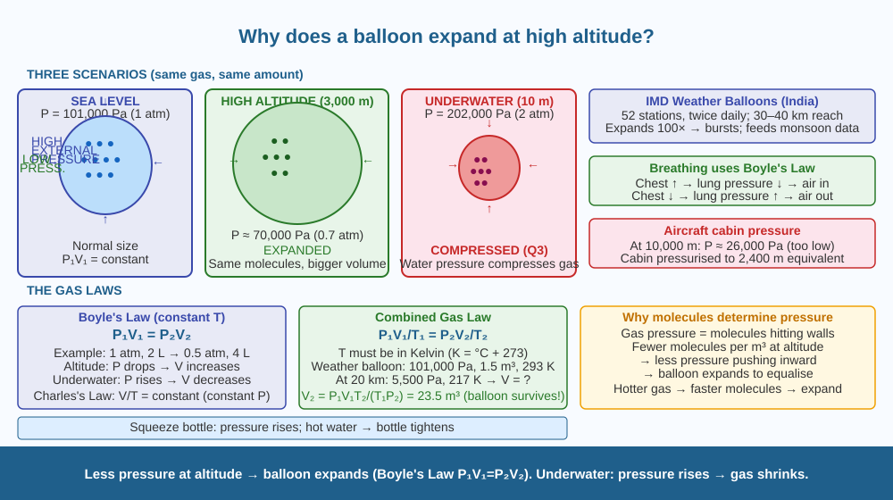

Discover the law that links pressure, volume, and temperature in gases — and understand why this law controls weather balloons, your lungs, and the behaviour of every gas on Earth.
A balloon inflated at sea level and carried to the top of a mountain (3,000 m altitude) expands visibly — even though no air was added. The same balloon placed in a freezer shrinks without losing any air. Taken underwater, it shrinks dramatically. What determines the size of a gas — and why does the same amount of gas take up different amounts of space under different conditions?
What gas pressure actually is:
Inside a balloon, gas molecules are in constant random motion. They collide with the walls of the balloon billions of times per second. Each collision exerts a tiny force on the wall. The sum of all these forces per unit area is the gas pressure. More molecules = more collisions = more pressure. Faster molecules (higher temperature) = harder collisions = more pressure.
Boyle's Law (constant temperature):
At a fixed temperature, pressure × volume = constant:
P × V = constant → P₁V₁ = P₂V₂
If external pressure decreases (altitude increases), the gas inside expands until internal pressure equals external pressure. This is exactly what happens to the balloon at altitude: - At sea level: high atmospheric pressure compresses balloon - At 3,000 m: lower atmospheric pressure → balloon can expand → volume increases - Atmospheric pressure falls from ~101,000 Pa at sea level to ~70,000 Pa at 3,000 m
Charles's Law (constant pressure):
At a fixed pressure, volume / temperature = constant:
V/T = constant → V₁/T₁ = V₂/T₂ (T must be in Kelvin: K = °C + 273)
Cold air (freezer): molecules move more slowly → fewer/weaker collisions with walls → lower pressure → balloon shrinks to restore equilibrium.
The Combined Gas Law:
P₁V₁/T₁ = P₂V₂/T₂
This single equation connects all three variables and allows prediction of any gas's behaviour when conditions change.
The altitude mechanism (Boyle's Law applied):
The underwater mechanism (Boyle's Law, opposite direction):
Underwater, water pressure ADDS to atmospheric pressure. Greater inward force → balloon volume decreases. This directly explains Q3: underwater = increased pressure → balloon shrinks.
Why mountains feel cold: adiabatic cooling
As air rises in the atmosphere, lower pressure allows it to expand. Expansion requires energy — which the air takes from its own internal energy → temperature drops. This is why mountains are cold and clouds form at altitude.
Think of the gas inside the balloon as a crowd of people in a room. Each person randomly bumps into the walls — these bumps are the gas pressure. If the room walls can move (elastic balloon), and the crowd is compressed by an external wall (atmospheric pressure), the room is small. Remove the external wall (go to high altitude, where atmosphere is thinner) — the crowd can spread out → the room (balloon) gets bigger. Cool the room (freezer) — people move more slowly → hit walls less hard → walls close in. The number of people (moles of gas) never changes.

The diagram shows three scenarios side by side. Left: Balloon at sea level — large atmospheric pressure arrows pressing inward, balloon at normal size. Centre: Same balloon at 3,000 m altitude — fewer/smaller atmospheric pressure arrows, balloon expanded. Right: Same balloon 10 m underwater — large inward arrows (atmosphere + water pressure), balloon compressed small. Below each balloon: gas molecule dots (same number in all three) with movement arrows. Bottom: P₁V₁ = P₂V₂ equation with a worked example using sea level vs altitude pressures.
Half-fill a sealed plastic bottle with air. Squeeze it hard — you can feel the air pressure increase as you reduce the volume (Boyle's Law: smaller V → higher P). Release and the bottle springs back. Now place the sealed bottle in a hot-water basin for 2 minutes (Charles's Law: T increases → gas expands → pressure rises, bottle feels tighter if not flexible). Then place it in a cold-water basin. The bottle squeezes inward slightly as the air cools and contracts. You can feel Boyle's and Charles's Laws with your hands.
The atmosphere is mostly nitrogen (~78%) and oxygen (~21%). At altitude, there are fewer molecules of both per cubic metre — so although the ratio is the same, each breath delivers fewer oxygen molecules. At 5,000 m, atmospheric pressure is about 54% of sea level, meaning each breath delivers only 54% of the oxygen molecules. This causes altitude sickness (headache, nausea). At 8,000 m+ (the "death zone"), even with a full breath, your blood cannot pick up enough oxygen for sustained effort. Mountaineers use supplemental oxygen above 8,000 m. How does the oxygen concentration in your blood change as you acclimatise to altitude over days and weeks? (Hint: the body responds by increasing red blood cell production.)
Why does a sealed balloon get bigger when it rises to high altitude?
Why is knowing the mechanism of gas expansion more useful than just observing it expands?
If a balloon were taken deep underwater instead, what would you predict?
A weather balloon is filled with helium to a volume of 1.5 m³ at sea level (pressure = 101,000 Pa, temperature = 20°C = 293 K). It rises to 20 km altitude where pressure = 5,500 Pa and temperature = −56°C = 217 K. (a) Using the combined gas law (P₁V₁/T₁ = P₂V₂/T₂), calculate the volume at 20 km altitude. (b) If the balloon material can stretch to a maximum volume of 25 m³ before bursting, will it survive to 20 km? (c) If the balloon starts at 1.2 m diameter at sea level, what diameter does it reach at 20 km? (Volume of sphere = 4/3 × π × r³.)
In 1783, Jacques Charles (whose name is attached to Charles's Law) made the first hydrogen-filled balloon flight in Paris, ascending to 549 metres. He noticed the balloon's skin bulged as it rose — the gas was expanding against the lower atmospheric pressure. He was experiencing Boyle's Law in real time, without yet having the equations. He had to release gas deliberately to prevent the balloon from bursting. Modern weather balloons — launched from Kolkata, Pune, Chennai, and 49 other Indian stations every day — still face the same constraint: they must be under-filled at launch so that the expanding gas at altitude does not burst them before they reach their target height.
At high altitude, atmospheric pressure is lower → balloon gas expands (Boyle's Law: P₁V₁ = P₂V₂). Underwater: higher pressure → gas compresses → balloon shrinks. Temperature also matters: cold → gas contracts, heat → expands (Charles's Law).